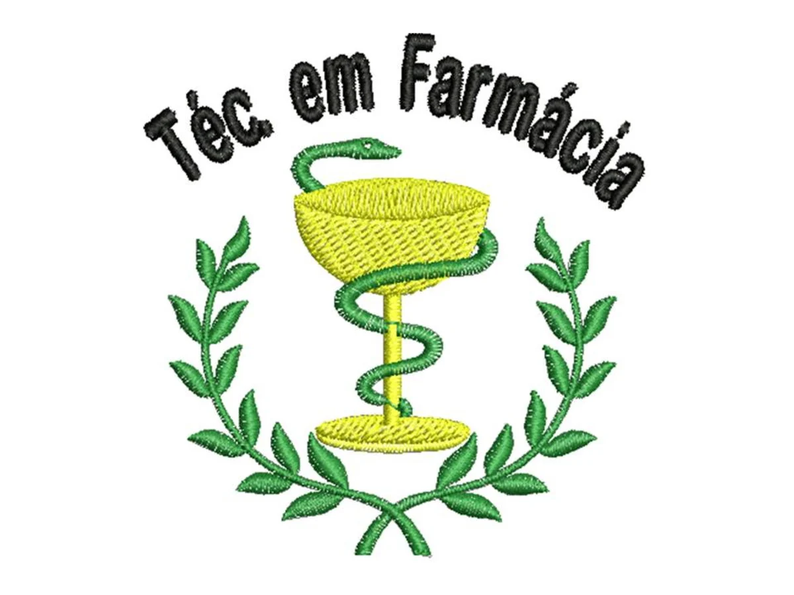
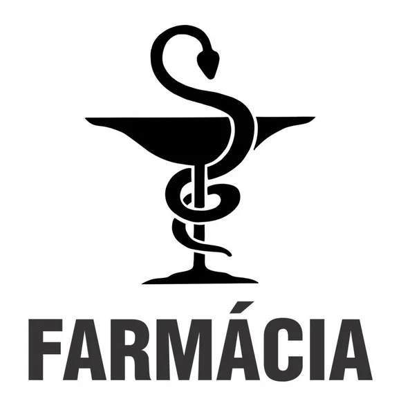

O que estudar para o vestibular: Ciências da Natureza: Biologia, Química e Física são fundamentais, pois fornecem a base para o entendimento de processos biológicos, formulação de medicamentos e funcionamento do corpo humano. Ciências Humanas e Linguagens: É importante ter um bom desempenho em português, redação e outras disciplinas como história e geografia, pois isso demonstra a capacidade de interpretação, escrita e conhecimento geral. Matemática: O estudo de matemática, especialmente em áreas como funções, estatística e análise combinatória, é importante para o raciocínio lógico e a resolução de problemas que podem surgir na graduação. O que estudar durante a faculdade: Química: Química geral, orgânica, analítica, farmacêutica e bioquímica são essenciais para a compreensão da composição e propriedades de substâncias e medicamentos. Biologia: Anatomia, fisiologia, microbiologia e imunologia são importantes para entender o funcionamento do corpo humano, os processos biológicos e a relação com doenças e medicamentos. Farmacologia: Estuda a ação dos medicamentos no organismo, seus efeitos e interações. Toxicologia: Estuda os efeitos nocivos de substâncias químicas no organismo, incluindo medicamentos e substâncias ambientais. Farmacotécnica: Estuda os processos de produção e manipulação de medicamentos. Legislação Farmacêutica: É importante para entender as leis e normas que regem a profissão farmacêutica. Saúde Pública: Estuda as questões de saúde em nível populacional, incluindo prevenção, controle de doenças e promoção da saúde. Gestão e Administração: Disciplinas como gestão farmacêutica e logística são importantes para a atuação em diferentes áreas da farmácia. Farmácia Clínica: Foca na atuação do farmacêutico no cuidado direto ao paciente, como a orientação sobre medicamentos e o acompanhamento terapêutico.
  Odontologia